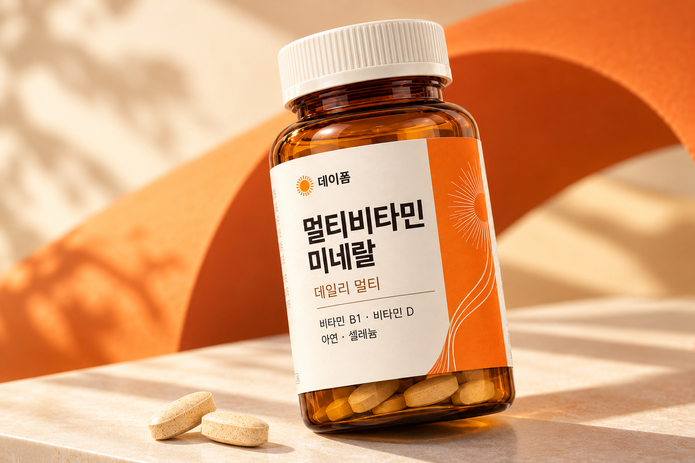
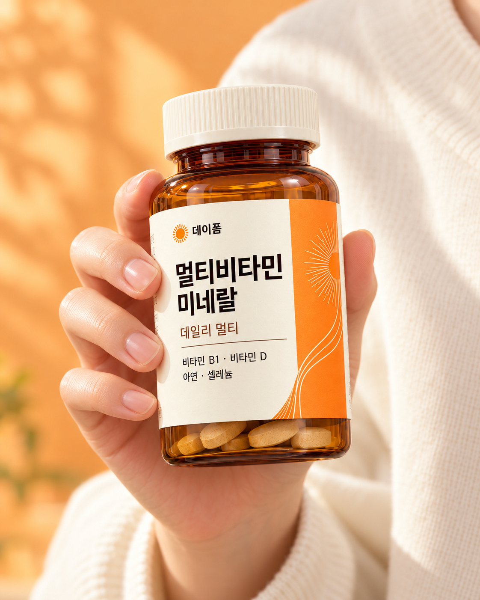
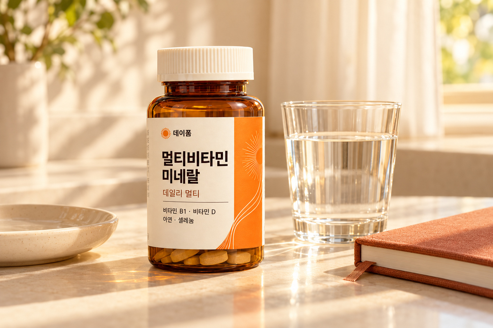
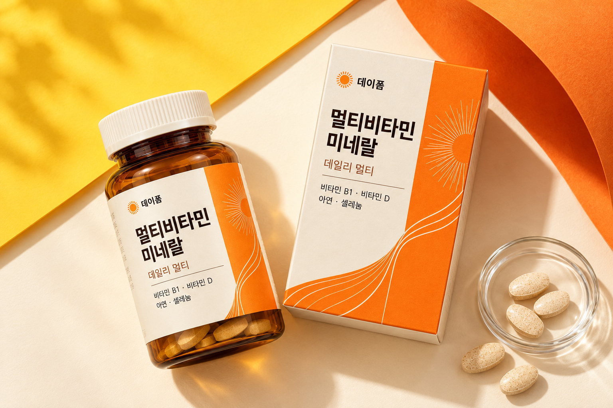
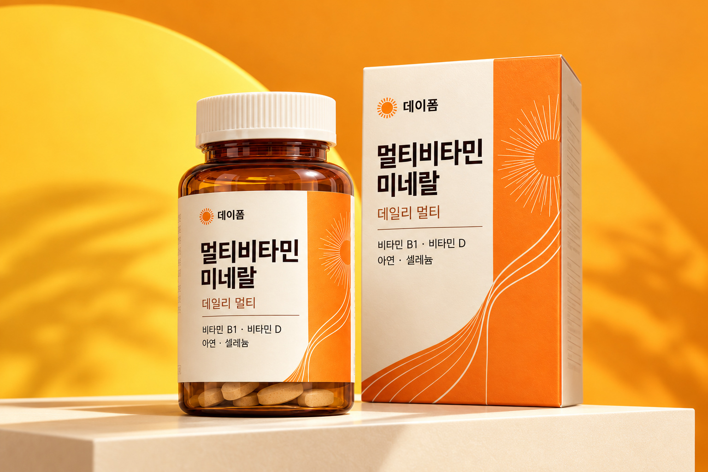

기본을 넓게
에너지 대사·뼈·면역·항산화,
각기 다른 영양의 역할.
에너지 대사부터 뼈·면역·항산화까지.
매일의 기본을 생각한 비타민·미네랄.

서둘러 마친 식사, 익숙한 메뉴의 반복.
오늘의 영양이 마음에 걸렸다면,
더 복잡한 계획보다 나를 살피는 작은 습관부터.
데이폼은 그 일상의 시작을 제안합니다.
에너지 대사·뼈·면역·항산화,
각기 다른 영양의 역할.
성분명에서 멈추지 않고
구성의 의미까지.
일상 가까이 두고
나를 챙기는 작은 시간.
에너지 대사, 뼈의 형성과 유지,
정상적인 면역기능과 유해산소로부터의 세포 보호.
이름을 넘어 역할을 이해하면, 구성의 의미가 보입니다.
탄수화물과 에너지 대사에
필요한 비타민입니다.
칼슘·인의 흡수와 이용,
뼈의 형성과 유지에 필요합니다.
정상적인 면역기능과
정상적인 세포분열에 필요합니다.
유해산소로부터 세포를
보호하는 데 필요합니다.
영양소의 일반적 기능을 설명한 구성 콘셉트입니다. 실제 함유·함량 및 기능성이 검증된 판매 제품은 아닙니다.
정보 출처 · 식품안전나라 영양소 기능 안내 ↗하루가 머무는 공간 가까이에,
나를 위한 한 자리를 남겨보세요.
깊이 있는 앰버와 선명한 오렌지가
건강을 생각하는 마음에
당신의 취향까지 더합니다.

데이폼이 생각하는 멀티의 가치는 성분 이름의 개수가 아닙니다.
서로 다른 영양소의 역할을 이해하고,
내 생활과 식습관에 맞는 선택을 하는 것.
나를 위한 한 병은 그 질문에서 시작됩니다.
각 영양소의 기능
식습관·중복 성분 점검
내 생활에 맞는 섭취
일상에 맞는 선택을 위해 구성·함량·주의사항을 함께 살펴보세요.

서둘러 마친 끼니와 비슷한 메뉴가 반복될 때. 식습관을 돌아보고, 내게 필요한 영양을 점검하는 작은 계기를 만들어보세요.
무엇이 들어 있는지만큼 왜 필요한지도 중요하니까. 에너지 대사·뼈·면역·항산화, 네 가지 역할을 중심으로 구성을 이해해보세요.
바쁜 하루에도 나를 살피는 시간은 남겨두세요. 생활에 어울리는 한 병과 함께, 내 몸에 관심을 기울이는 습관부터 시작해보세요.
균형 잡힌 식사를 기본으로 필요한 영양을 점검하는 데일리 멀티 콘셉트입니다. 특정 생활습관만으로 영양 결핍이나 섭취 필요성이 정해지는 것은 아닙니다.
수치를 기재하지 않은 설명용 라벨 가이드입니다.
보이는 인상만큼
담긴 정보를 중요하게.
성분과 함량을 이해하는 것이
나를 위한 선택의 시작입니다.
빼곡한 일정 속에서도 나를 위한 자리는 필요하니까.
건강한 식사와 휴식을 기본으로,
표시된 섭취방법에 맞춰 내 생활의 리듬을 찾아보세요.
데이폼은 그 작은 관심이 이어지는 일상을 생각합니다.

보관방법에 맞는 곳에
나를 위한 자리를 만드세요.
정해진 섭취량과 방법을
먼저 확인하세요.
함께 먹는 제품과
몸 상태를 돌아보세요.
포장에 표시된 섭취량과
횟수를 지켜주세요.
섭취 시점과 방법은
해당 제품의 안내에 맞춰주세요.
알레르기 유발 원료와
섭취 대상을 먼저 살펴보세요.
실제 판매 제품이 아닌 샘플이므로 특정 복용량·복용 시점을 제안하지 않습니다.
좋은 영양도 내 몸의 상태에 맞아야 하니까.
아래에 해당한다면 제품의 주의사항을 읽고,
섭취 전 의사 등 전문가와 상담하세요.
현재 상태와 복용 중인 의약품을 함께 확인해주세요.
섭취 대상과 원료별 주의사항을 먼저 확인해주세요.
원재료명과 알레르기 표시를 꼼꼼하게 살펴보세요.
깊이 있는 앰버와 따뜻한 아이보리,
일상에 생기를 더하는 오렌지의 선명한 대비.
정돈된 한글 라벨과 유려한 곡선으로 완성한 데이폼은
내 공간에도, 소중한 마음을 전하는 순간에도 어울립니다.

아이보리 라벨과 선명한 대비
한글과 오렌지 곡선의 조화
패키지와 함께 연출한 정제
사진의 정제는 디자인 연출용입니다. 실제 크기·수량·1회 섭취량을 나타내지 않습니다.
해당 제품의 보관 조건과 개봉 후 안내를 따라주세요.
소비기한과 포장 상태를 확인하고, 어린이의 손이 닿지 않는 곳에 보관해주세요.
비타민 B1·D와 아연·셀레늄은 서로 다른 역할을 맡습니다. 에너지 대사, 뼈의 형성과 유지, 정상적인 면역기능, 유해산소로부터의 세포 보호까지. 성분의 개수만 보기보다 각각의 역할을 이해하면 나에게 맞는 구성을 판단하는 데 도움이 됩니다.
좋은 습관의 시작은 알맞게 챙기는 것입니다. 실제 제품 포장에 표시된 섭취량과 방법을 따라주세요. 본 샘플에서는 특정 복용량이나 식전·식후 섭취를 지정하지 않습니다.
더하는 것만큼 겹치는 성분을 확인하는 일도 중요합니다. 함께 섭취하려는 제품의 영양소 종류와 함량을 비교하고, 의약품을 복용 중이거나 질환이 있다면 섭취 전에 의사와 상담하세요.
제품마다 섭취 대상과 주의사항이 다릅니다. 임신·수유 중이거나 어린이가 섭취할 경우에는 해당 제품의 표시사항을 확인하고 전문가와 먼저 상담하세요. 개인의 상태에 맞는 선택이 우선입니다.
데이폼은 DETAILIST가 기획·디자인한 자체 포트폴리오 샘플입니다. 사진의 용기·상자·정제는 연출 이미지이며, 실제 제조·인증·함량이 확인된 판매 제품이 아닙니다. 주문·판매·결제는 제공하지 않습니다.
영양소 설명은 식품안전나라의 일반 안내를 참고했습니다. 본 제품의 효과나 안전성을 검증한 자료가 아니며, 개인에 대한 건강·의료 상담을 대신하지 않습니다. 건강기능식품은 질병의 예방 및 치료를 위한 의약품이 아닙니다.
바쁜 하루 속에서도,
내가 빠지지 않도록.
